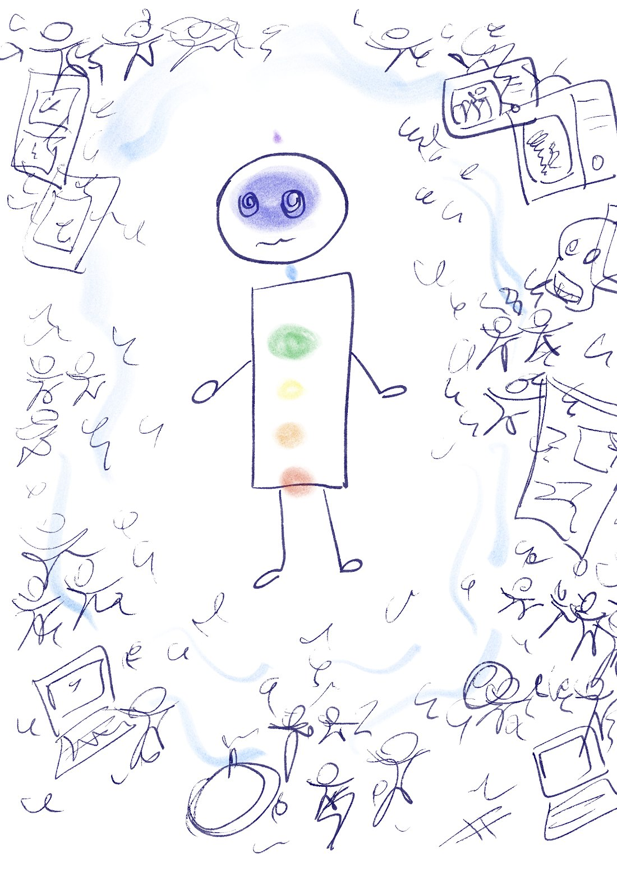
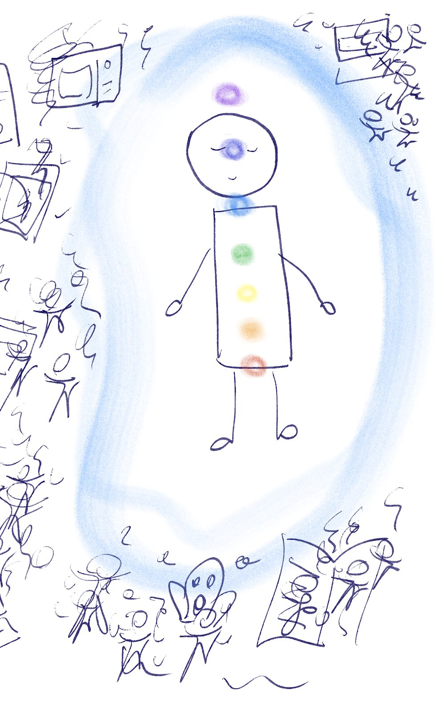

Um trabalho para identificar, reequilibrar e alinhar a sua frequência vibracional, trazendo mais clareza, bem-estar e presença para o seu dia a dia. À distância, em três etapas integradas: mapeamento energético, harmonização com Reiki e relatório escrito.
Você não precisa esperar uma crise para cuidar do seu campo energético — mas alguns sinais costumam indicar que é hora de dar atenção especial a ele:
A harmonização não muda o que está ao seu redor — as mesmas demandas, telas e pessoas continuam lá. Mas ela ajuda a reorganizar como você habita esse espaço: com mais clareza, presença e leveza, mesmo em meio à correria. Os desenhos abaixo representam bem o estado da maior parte dos campos energéticos que chegam e saem da sessão — refletido nos feedbacks mais adiante nesta página.


A radiestesia é uma prática integrativa que funciona como uma espécie de “biossensor”.
O nosso corpo e o nosso campo magnético percebem constantemente as frequências vibracionais ao nosso redor — emoções, ambientes, pensamentos e energias.
A percepção captada pelo radiestesista é traduzida em micro movimentos que causam o movimento do pêndulo e auxiliam no mapeamento do campo energético do cliente.

A palavra Reiki vem do japonês — Rei significa Energia Universal (a Força que guia a Vida) e Ki é a nossa “energia vital” interna.
Quando a rotina fica intensa ou o estresse acumula, a nossa energia vital tende a perder a harmonia. O Reiki atua justamente para reorganizar esse fluxo e devolver a você o seu estado natural de leveza.
A energia do Reiki transcende o espaço e o tempo — e é isso que torna esse trabalho possível.

Desde 2023, tenho recebido relatos lindos de pessoas que passaram pela Harmonização do Campo Energético. Compartilho aqui alguns dos temas mais recorrentes, respeitando a privacidade de quem os trouxe:
Além desses feedbacks, tive casos de pessoas que receberam a harmonização comigo e se encantaram tanto com a experiência que decidiram aprender radiestesia também — e hoje usam a técnica para cuidar de si mesmas no dia a dia. Isso me deixa muito feliz, já que o objetivo deste trabalho é que mais e mais pessoas vivam mais conectadas consigo mesmas, e aprender a cuidar da própria energia faz parte desse caminho.
Estes são relatos individuais. Não são promessas nem garantia de resultado — as experiências variam de pessoa para pessoa.
A Harmonização do Campo Energético é uma Prática Integrativa e Complementar e NÃO substitui o acompanhamento médico, psiquiátrico ou psicológico, tampouco realiza diagnósticos clínicos. Mantenha o acompanhamento com os seus profissionais de saúde e não interrompa tratamentos ou o uso de medicamentos por conta própria.